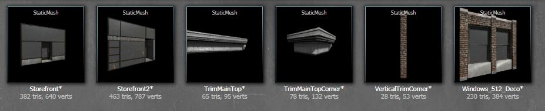
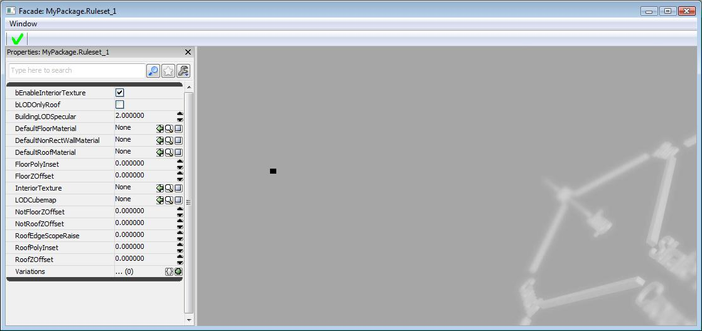
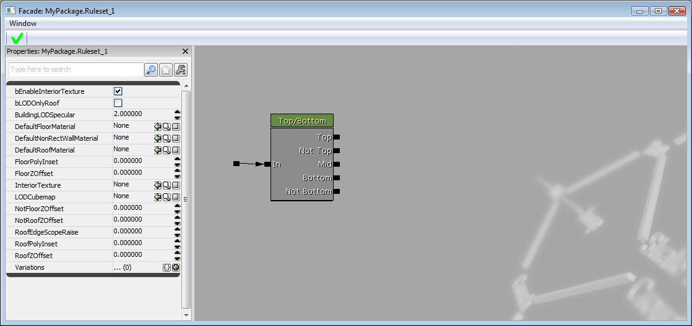
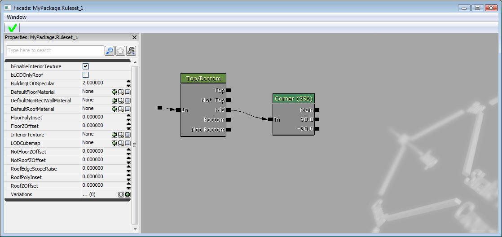
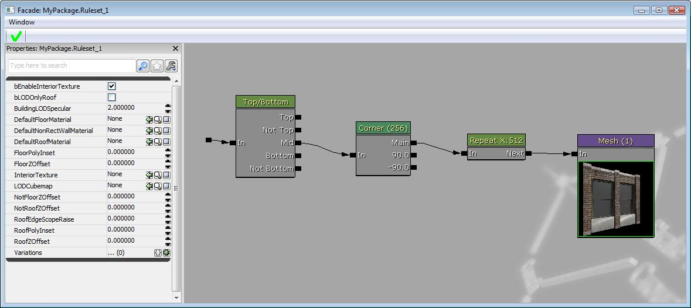
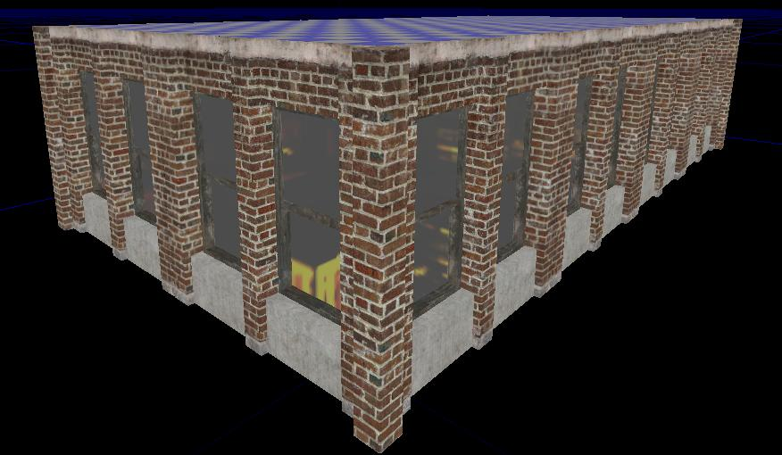
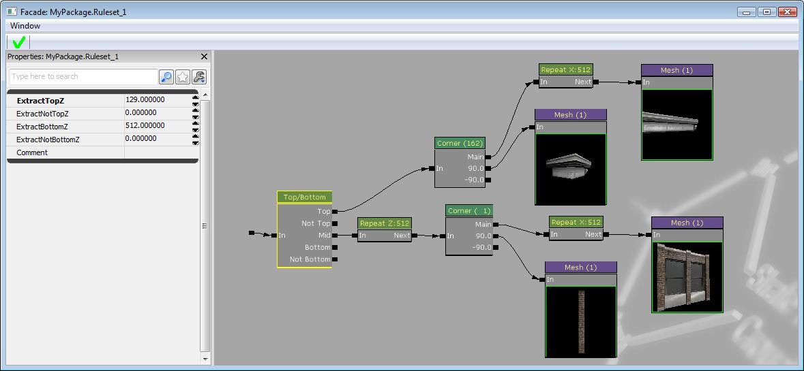
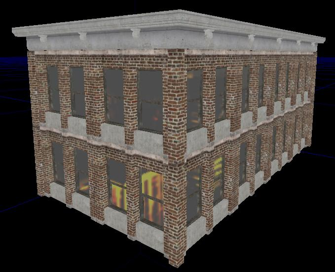
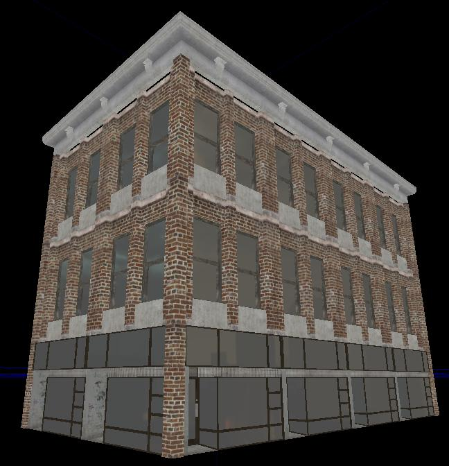

UDN
Search public documentation:
ProceduralBuildingsTutorialKR
English Translation
日本語訳
中国翻译
Interested in the Unreal Engine?
Visit the Unreal Technology site.
Looking for jobs and company info?
Check out the Epic games site.
Questions about support via UDN?
Contact the UDN Staff
日本語訳
中国翻译
Interested in the Unreal Engine?
Visit the Unreal Technology site.
Looking for jobs and company info?
Check out the Epic games site.
Questions about support via UDN?
Contact the UDN Staff
프로시저럴 빌딩 튜토리얼
문서 변경내역: Steven Haines 작성. 홍성진 번역.
개요
셋업 하기
메시 모으기
먼저 건물을 구성하는 블럭으로 사용될 고정 메시 세트가 필요합니다. 각 메시는 바라봤을 때 메시의 좌하단 코너에 피벗 포인트가 위치하게 만들어야 합니다. 새 패키지를 만들어서 이 메시를 그 속으로 임포트하십시오. 필요한 것은:- 반복 가능한 창이나 벽 메시
- 창이나 벽 메시 높이에 맞는 코너 메시
- 약간의 스토어프론트(storefront) 메시
- 반복 가능한 윗부분이 다듬어진(top trim) 메시
- 다듬어진 메시의 높이에 맞는 코너 메시

ProcBuilding Ruleset 생성
패키지에 새로운 ProcBuilding Ruleset을 만들려면, 우 클릭 후 목록에서 선택하십시오.
ProcBuilding Volume 생성
툴바의 큐브를 우 클릭하여 Brush Builder - Cube를 수정합니다. 값을 x=1024, y=2048, z=512로 변경하십시오. 볼륨 아이콘을 우 클릭 후 ProcBuilding을 선택하면 됩니다. 새로 만든 ProcBuilding Ruleset을 콘텐츠 브라우저에서 Procbuilding Volume으로 드래그하여 적용시킵니다.
새로 만든 ProcBuilding Ruleset을 콘텐츠 브라우저에서 Procbuilding Volume으로 드래그하여 적용시킵니다.
건물 바닥 설정하기

제일 먼저, Top/Bottom 노드를 만들어야 합니다. Facade에서 우 클릭 후 목록에서 선택하십시오. 이 노드로 건물의 top, bottom, middle 부분을 정의할 수 있습니다.
다음으로, 코너 노드를 추가해야 합니다. 우 클릭 후 목록에서 선택하십시오. 그것을 Top/Bottom 노드의 Mid 부분에 연결합니다. 이리 하여 바깥쪽 코너 메시, 안쪽 코너 메시와 주 메시를 정의할 수 있습니다.
이제 창 또는 벽 메시를 추가할 수 있습니다. 콘텐츠 브라우저에서 원하는 고정 메시를 선택하고, Facade의 우 클릭 메뉴에서 Mesh를 선택하여 메시 노드를 만듭니다. 다른 방법으로는, ‘M’키를 누른 상태에서 Facade에 좌클릭하여 노드를 만듭니다. 메시 노드 속성에서, X Z축(DimX와 DimZ)을 정의해야 합니다. 이 예에서는 512x512 크기의 창 메시를 사용합니다. 여지껏 만든 건물 모양은 이와 같습니다:
여지껏 만든 건물 모양은 이와 같습니다:
 ProcBuild Volume의 긴 쪽에 맞춰 메시가 늘어난 것을 볼 수 있습니다. 이를 고치려면, 메시를 x축을 따라 반복해야 합니다. 우 클릭 메뉴에서 Repeat node를 추가하고, 코너 노드와 메시 노드 사이에 연결하십시오. 노드 속성에서 repeat axis to EPBAxis_X로 변경하십시오. 반복 크기를 메시의 DimX 크기에 맞게 설정해야 합니다.
ProcBuild Volume의 긴 쪽에 맞춰 메시가 늘어난 것을 볼 수 있습니다. 이를 고치려면, 메시를 x축을 따라 반복해야 합니다. 우 클릭 메뉴에서 Repeat node를 추가하고, 코너 노드와 메시 노드 사이에 연결하십시오. 노드 속성에서 repeat axis to EPBAxis_X로 변경하십시오. 반복 크기를 메시의 DimX 크기에 맞게 설정해야 합니다.

결과: 이제 코너 메시를 정의해야 합니다. 현재 ProcBuilding Volume의 각 코너에는 빈 플레이스 홀더가 있습니다.
코너 고정 메시를 사용하여 새 메시 노드를 만든 후, 90도 부착 슬롯에 연결하십시오. 메시 노드의 속성에서 메시의 차원과 코너의 크기를 설정했는지 확인하십시오. 이 예에서는 코너 크기와 메시 노드의 DimX 값을 ‘1’로 했습니다. 메시를 알맞게 맞추려면 이 값으로 해야할 수 있습니다. 대부분 코너 메시의 피벗이 있는 곳에 의해 달라집니다.
이제 코너 메시를 정의해야 합니다. 현재 ProcBuilding Volume의 각 코너에는 빈 플레이스 홀더가 있습니다.
코너 고정 메시를 사용하여 새 메시 노드를 만든 후, 90도 부착 슬롯에 연결하십시오. 메시 노드의 속성에서 메시의 차원과 코너의 크기를 설정했는지 확인하십시오. 이 예에서는 코너 크기와 메시 노드의 DimX 값을 ‘1’로 했습니다. 메시를 알맞게 맞추려면 이 값으로 해야할 수 있습니다. 대부분 코너 메시의 피벗이 있는 곳에 의해 달라집니다.
 결과:
결과:

이제 건물의 바닥 하나가 생겼습니다. ProcBuilding Volume의 폭을 수정하면 메시가 볼륨의 크기에 맞게 조정됩니다. 볼륨의 높이를 수정하려고 하면, 메시가 늘어나는 것을 볼 수 있습니다. 이것을 고정하려면, Z축을 따라 각 바닥을 반복해야 합니다. 이를 위해 코너 노드 앞에서 반복 노드를 추가하고, repeat axis to EPBAxis_Z로 설정하십시오. 반복 크기는 512로 하십시오.
이것을 고정하려면, Z축을 따라 각 바닥을 반복해야 합니다. 이를 위해 코너 노드 앞에서 반복 노드를 추가하고, repeat axis to EPBAxis_Z로 설정하십시오. 반복 크기는 512로 하십시오.
 결과:
결과:

Top trim 셋업

결과:
땅바닥 셋업
 결과:
결과:

이것은 현재 셋업된 방식은, 하나의 스토어프론트 고정 메시를 반복하는 식으로 구성된 땅바닥입니다. 다양성을 주려면, 스토어프론트용 메시 노드에 메시 슬롯을 추가하면 됩니다. 새 슬롯에 다른 고정 메시를 추가하십시오. 그리고 각 메시가 슬롯을 채우는 확률을 설정합니다. 이 예에서는 각 메시에 대해 ‘.5’를 사용하였습니다. 결과:
결과:
 이와 같은 방법이 언리얼엔진3로 프로시저럴 빌딩을 만드는데 좋은 참고가 될 것입니다. 자세한 사항은 Procedural Buildings KR 페이지를 참조하십시오.
이와 같은 방법이 언리얼엔진3로 프로시저럴 빌딩을 만드는데 좋은 참고가 될 것입니다. 자세한 사항은 Procedural Buildings KR 페이지를 참조하십시오.